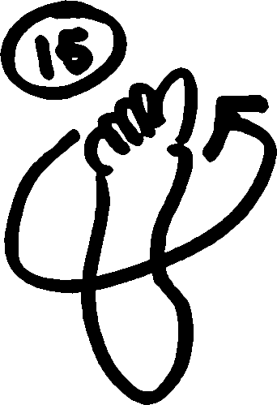

Daily Mobiltity Workout
This should be done daily, preferrably every morning.
Each of the following movements covers one joint. Most of them are "circles" and should be done both clockwise and counter-clockwise. 5-10 reps in each direction is sufficient, but it's helpful to add additional reps for troublesome joints.
Press to the edges of your ROM, but not enough to cause discomfort. This should be gentle. All repetitions should be at a medium to slow pace.
Once a week, you should perform a session for a number of reps equal to your age.
Source: http://phraktured.net/
3 Plane Neck Movement
Circle your head
Finger Flexion/Extension
Maximally open the hand, then make a fist
Wrist Circles
Make a fist and "draw a circle" with your pointer finger knuckle
Elbow Circles
Large Arm Circles
Circular Shrugs
Torso Twists
Keep the arms straight, palms facing upward

Side Bends
Forward/Back Bends
Keep the arms straight, palms facing upward
Bend forward losely, allowing the spine to round
Pelvic Tilts
Hula-hoop Hip Circles
Leg Rotations
High Knee Raises
Done in place
Kick Backs / Butt Kicks
Done in place
Ankle Circles
Point the toes and "draw a circle" with the big toe
Ankle Tilts
Without twisting the foot, tilt the ankle to the left and right
Toe Flexion/Extension
Lift toes up then curl them down